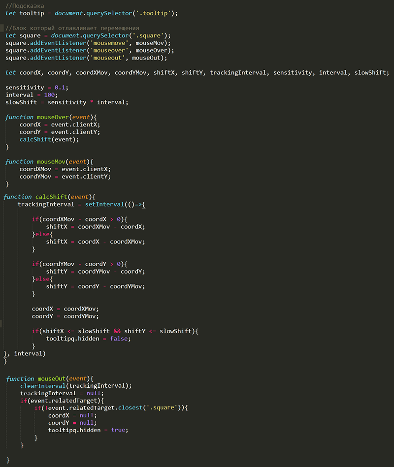

[#] Исправил баг со словом "дней" в блоке "Прогресс". Написал простейшую функцию которая берет количество дней отрезает последние цифры, проходит по условиям и соответственно принимает решение какое слово вставить [Обучаюсь - 111 дней, 121 день, 122дня].
[#] Задумался о том, чтобы хранить данные для блока "Прогресс" не в JS файле, а в JSON. Думаю будет не лишним практика работы с JSON.
[#] Ознакомился с разделом Фреймы и окна. Интересно было прочитать про взлом с помощью clickjacking.
[#] Так же исправил баг с кэшированием. Обновил JS файл и загрузил на сервер, при переходе на сайт
изменения не отображались, так как брался из кэша старый JS файл. Немного погуглив нашел вариант в ссылку
на JS файл добавить PHP код который добавляет к пути на файл дату его последнего обновления. Браузер при
загрузке сравнивает ссылки и если дата в ссылке изменилась, то подгружает актуальную версию файла.
<script src="js/progress.js?<?php echo filemtime('js/progress.js') ?>"></script>
15.02.2021
[#] Полностью закончил раздел Браузер: документ, события, интерфейсы. Перехожу к последнему блоку учебника "Тематические разделы".
[#] Заметил маленький баг. Он заключается в блоке "Прогресс" в пункте с днями обучения неправильно отображается слово "дней" (Обучаюсь - 103 дней), руками изменять под каждый день не хочется. Завтра будем автоматизировать этот процесс)
14.02.2021
[#] Закончил раздел Формы, элементы управления, задачки из раздела очень понравились. Сейчас приступаю к Загрузка документа и ресурсов
[#] Закончил раздел Загрузка документа и ресурсов, задачу решил быстро.
13.02.2021
[#] На сайт добавил немного функционала. До этого надо было обновлять цифры прогресса вручную в каждом HTML файле отдельно. Cейчас цифры берутся из одного JS файла ну и там считается "Итого".
[#] Изучил Клавиатура: keydown и keyup, было интересно немного поломать голову над задачкой.
[#] Закончил раздел Интерфейсные события, приступаю к Формы, элементы управления
[#] На сегодня остановился на теме - Фокусировка: focus/blur. Начал решать вторую задачу. Пытаюсь найти, как растянуть textarea до размеров родительского блока.
12.02.2021
[#] Детальнее разобрался с Drag'n'Drop с событиями мыши, ну и решил две задачи. Также добавил на сайт навигацию по блогу. На данный момент уже чувствую, как с каждым днем становится тяжелее вести блог, надо продумывать пути к автоматизации.
11.02.2021
[#] Сегодня на занятия было всего 2 часа, успел только ознакомиться с Drag'n'Drop с событиями мыши и частично решить первую задачу.
10.02.2021
[#] Решил задачу, выполнил немного по своему.
Мой вариант решения

09.02.2021
[#] Сегодня все-таки придумал решение для задачи, реализовал на 85%. На данный момент понял как отлавливать и правильно обрабатывать события мыши, а также измерять скорость передвижения курсора.
08.02.2021
[#] Сегодня было всего пара часов, все провел над задачкой, так и не решил её. Завтра буду атаковать!
07.02.2021
[#] Досмотрел все теги + их атрибуты, из 118-ти, 43 тега оказались незнакомыми. По знакомым просто обновил знания.
[#] Начал ознакомление с CSS разделами [псевдоэлементы], [селекторы и их комбинации].